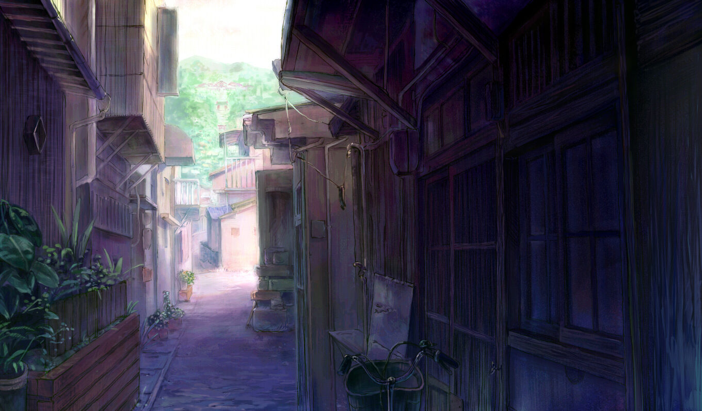

1
 |
当错过成为习惯，多少，也就有惧于再遇了。最深的摧残莫过于摧心，最狠的断绝莫过于断情，真想斩去自己这一双手，以后，不必再索循这掌纹谶下的红尘路。人生最苦是相欠，欠而无从还，更是一世的罪。而今枷已锁颈，墨已黥额，而远方，早已不再是当年的欢喜，这一场流歌迎风和泪，曾经快意地放逐文字，怕也不会是余年的自由。而今能做的，只能时时磨字刺心，作今生不休的自罚。
抹一把眼角的潮凉，饮一口冽辣的长风，趁天未荒地未老，走吧。曾经纯白的想象已不配为我所有，胸前疏狂起的荆棘亦扎破了那些良辰美景。爱，终于将我流放。伏罪岁月里若还有坚执，便是无论回眸与前眺，我将不挥衣袂，不说再见，哪怕走成一粒尘，也要凝作你的悲欢，湮入黄土，种下对你的眷。不，我不会再贪那一折水月传说，只在西风横吹中洒下雪语，为这世，掩去我的丑陋。
相离不是初衷，沉默并非情愿，但我不会为所有的转折护辩。因这一折，必然阻人好行程，更何况折作了利尖，刺伤温暖的信念。为此请天剖我心，拜旧欢，祭情殇。若命已成陌上草，愿燃野火，为你舞最后一抹亮，便是灰飞从风，你也可瞥见那一分墨色，是我当年真本色，为你衬出那时的月练白净，笛音清澈，从来就不曾染尘。